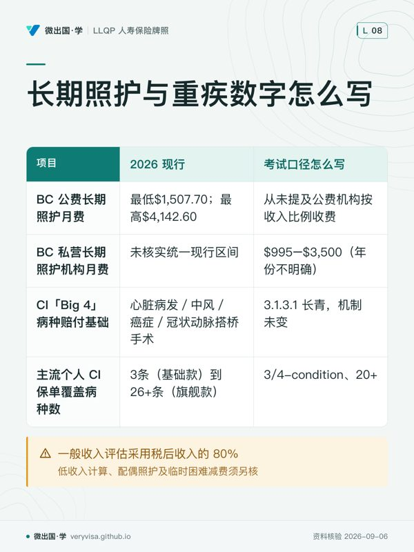

核实日期：2026-09-04｜本页现行数字与市场信息的出处：CLHIA CI 定义基准（Canadian Life and Health Ins…）、RBC／Canada Protection Plan／Manulife／Sun Life 四家 CI 产品（RBC Insurance～05）、BC 长期照护公费费率（BC 省政府、07）、加拿大个人 LTC 市场退出史三条（Insurance Portal（加拿大保险行业媒体）～10）、Sun Retirement Health Assist 产品细节（Sun Life）。附加险形态的重疾给付（dread disease rider）与独立重疾险的区分，本页只作简述，完整对照见
life-ch05-riders第二节与术语表（的原始记录也在那一页）。 复核周期：2027-09-01；BC 公费长期照护月费两条（BC 省政府、07）复核周期 2027-04-01（按收入核定，逐年可能微调）。
0. 这一章解决什么问题
你要考的是 意外与疾病保险模块（Accident and Sickness Insurance），本篇对应 CISRO 能力组件 c2「分析可用产品」，占本模块 30%——与 ch02 讲的伤残保险（DI）同属一个组件，但保护的是完全不同的两类需求：DI 补的是「收入没了」，本篇讲的重大疾病保险（critical illness insurance，CI）与长期护理保险（long-term care insurance，LTC）补的是「资产被吃掉」。这一篇讲的不是「CI 和 LTC 分别是什么」的定义记忆题，而是同一个道理在两个产品上各自的表现形式：赔不赔、赔多少、赔给谁，几乎全部取决于合同条款里那几行不起眼的定义文字——诊断出的病够不够严重、活过的天数够不够长、丧失的生活能力够不够多。
学完这一篇，你应该能做三件事：① 给一个具体的诊断场景（比如「短暂性脑缺血发作」），判断它够不够得上合同定义的「中风」；② 算出 CI 的分级比例给付与 LTC 的「每日限额 × 天数」两种计算模型；③ 说清楚 2026 年的加拿大市场里，CI 有多种已核实的产品设计，个人 LTC 的现行选择也须逐家核对——这条判断本身就是这一章最值钱的「现行政策」信息。
一、制度设计与底层逻辑
1. 它们补的不是收入，是「资产会被吃掉」这件事
伤残险（ch02）解决的问题是「这个人还能不能挣钱」，触发条件是一种需要反复核定的状态。CI 与 LTC 解决的是另一个问题：这个人挣不挣得到钱先不管，眼下这件事本身就会吃光他的积蓄。一场癌症治疗即使康复良好、很快复工，也可能带来传统医疗保险不覆盖的替代疗法费用、房屋无障碍改造、甚至只是「想请几个月假去做心理调适」这种非医疗性支出；一次中风留下认知障碍，即使不致命，也可能需要几十年的照护费用，而这笔钱与「这个人还能不能上班」完全是两件事。考试口径把这条逻辑说得很直接：这两种产品保护的都是资产，不是收入。
由此产生本章第一条底层逻辑：CI 通常定额给付；LTC 可按费用报销，也可定额给付，资格取决于护理依赖等合同条件。CI 一旦确诊达标、活过等待期，保险公司不会问你拿这笔钱去还房贷、去度假散心还是去请护工——款项用途通常由有权领取保险金的人安排，收款人须核所有权及合同。LTC 则相反：给付与「丧失日常生活自理能力」这一件事绑定，不管你原来是不是还在挣钱。这也是为什么考试口径反复强调「LTC 不是伤残险」——两者看起来都是「身体出事后给钱」，但判定的问题完全不是同一个问题。
2. 保险公司与投保人在博弈什么：定义的精确度
CI 与 LTC 的核心矛盾不在保额，在定义精确到什么程度。一份保单覆盖的病种越多、每种病的定义门槛越低，出险概率越高，保费自然越贵；反过来，便宜的保单往往靠收窄定义来控制风险，而不是明说「这类情况不赔」。这就带来了这两类产品最容易被投保人误解的一点：核赔须依据合同定义及证据，不能仅凭日常病名判断；没有全市场统计，不能推断各类拒赔原因的占比。
考试口径引述的历史拒赔样本强调疾病定义的重要性；本页未取得原始研究的年份、样本与分母，不把其中的百分比当作 2026 年现行拒赔率。学习时保留「诊断名称与合同定义可能不同」这一机制，实务核客户保单及医学证据。
3. 法律后果：合格期与存活期各挡一类风险，缺一不可

CI 合同里有两道时间闸门，很多学员会把它们记混，但它们各自挡的风险完全不同：
| 闸门 | 时点 | 核对内容 | 考试口径与实务边界 |
|---|---|---|---|
| 合格期／特定病种限制期 | 生效或复效后，按条款起算 | 哪些症状、检查或诊断触发限制，涉及哪些病种 | 考试口径的 30/90 天为其说明口径，不能推广成所有病种与现行产品的统一时限 |
| 存活期 | 诊断、手术或合同指定事件后 | 该项给付要求存活多久，是否有特别定义 | 按实际疾病条款确认，不能凭病情严重程度自行把 30 天改为 90 天 |
两道闸门的设计初衷都写在考试口径里：CI 保险的立意是「给活下来的人一笔钱去重建生活」，不是「给身故的人一笔变相的人寿保险金」——这也是为什么如果被保险人在存活期结束之后、理赔核准之前身故，保险金仍会照付给遗产或受益人；但如果死在存活期结束之前，则视为未满足存活期条件，这笔 CI 给付根本不会发生（当然，人寿险的身故给付是另一回事，两者互不影响）。
LTC 也要区分保障开始条件与失能后的等待期。考试口径列举免赔期（elimination period，0–90 天）的设计示例——这是被保险人自己选的一段「自费扛过去」的时间，越短保费越高，逻辑与伤残险的等待期相同（谁扛这段时间的成本，谁的保费就低）。
二、2026 现行政策与数字
1. 三列双口径表之一：CLHIA 重疾定义基准——现行 2024 Final，采用与否各保司自愿
| 考试口径说 | 2026 现行 | 考场答·柜台做 | |
|---|---|---|---|
| CLHIA CI 定义基准 | 未引用任何版本号，只讲「Big 4＋扩展清单」机制 | CLHIA 官网 Consumer Guides 页确认存在带版本号的官方文件，现行版本 2024 Final（此前还有 2018 Final 与 2013 Final 两版）（Canadian Life and Health Ins…） | 考场按「Big 4＋扩展清单」的机制答；柜台遇到客户问「你们的心脏病发定义和别家一样吗」，正确做法不是背版本号，而是逐条核对这份合同实际列明的定义原文——因为采用这份基准对保司而言是自愿的，不是强制标准 |
| 谁在用这份基准 | 不涉及 | CLHIA 官网原文明确「use by member companies is voluntary」——采用与否、采用哪个版本，各保司自行决定 | 同上：不能假设市场上所有 CI 保单的「心脏病发」定义都相同 |
2. 三列双口径表之二：考试口径的等待期区间 vs 已核实的 Sun RHA 产品参数
考试口径 3.3.3 给出 LTC 免赔期（elimination period）的区间是 0–90 天，这个区间描述的是「这类产品理论上的设计空间」，而不是某一款现行产品的实际参数。Sun Retirement Health Assist（Sun RHA）的官方顾问页及 Client Guide 第 4–6 页已核对：等待期为 365 或 730 天，但必须区分「保单开始」与「保障生效日」，也不能把这款产品视为全市场唯一选择（Sun Life（1、2））。
| 考试口径 2022 说 | Sun RHA（官方顾问页与 Client Guide 第 4–6 页已核实） | 考场答·柜台做 | |
|---|---|---|---|
| 免赔期／等待期 | 0–90 天可选，越短保费越高 | 365 天或 730 天二选一（Sun Life），远超考试口径区间上限 | 考场：按考试口径「0–90 天」的机制答，这是产品设计原理层面的通用描述；柜台：客户只准备 90 天自费缓冲不够；先确认保障生效日，再计算持续失能等待期，签单按具体保单核对 |
| 给付形态 | 未点名具体是报销型还是定额型，笼统称"daily maximum benefit" | 顾问页官网确认为 income-style benefit（收入型定额给付） | 与考试口径 3.3.5「机构照护多为 indemnity（定额直付）、居家照护多为 reimbursement（报销）」的笼统分类不同，柜台需按具体合同条款判断，不能套用考试口径的二分法 |
| ADL 判定细节 | 六项中≥2 项不能独立完成即达标，未提及辅助器具的处理 | 使用辅助器具后能安全且完整完成该项动作，就不视为该项失能（Client Guide 第 5 页） | 考试口径未涉及这层细则，柜台必须调出具体合同条款核对，不能仅凭本页转述判断 |
✕
3. 政府/行业侧现行数字快照
| 项目 | 2026 现行值 | 出处 | 考试口径怎么写 |
|---|---|---|---|
| BC 公费长期照护月费（住民按收入核定） | 一般收入评估采用税后收入的 80%，2026 标准最低额 $1,507.70/月、最高额 $4,142.60/月；低收入计算、配偶照护及临时困难减费须另核，不能把标准最低额当作人人必须支付的绝对下限 | 官方原文：BC Home and Community Care Policy Manual 第 7.B.2 章，生效日 2026-01-01（BC Ministry of Health），与二手源 CareCompare（第三方长期护理比价站，引用 BC… 数字完全一致 | 考试口径 Table 3.1 只给「不受补贴」的私营机构区间（BC 行 $995–$3,500/月），从未提及公费机构按收入比例收费这套机制，是两套并行体系，考试口径未作区分 |
| BC 私营长期照护机构月费 | 未核实统一现行区间，按具体机构书面报价 | CareCompare（第三方长期护理比价站，引用 BC… 仅提供线索，不作为现行价格证据 | 考试口径同一张表给的区间是 $995–$3,500（年份不明确），明显滞后 |
| CI「Big 4」病种赔付基础 | 心脏病发／中风／癌症／冠状动脉搭桥手术，考试口径用于认识常见重疾的组合；现售基础产品可能只保其中三项或更少 | 考试口径原文＋ RBC/CPP/Manulife/Sun Life 四家现行产品共同验证（RBC Insurance～05） | 考试口径 3.1.3.1 长青，机制未变 |
| 主流个人 CI 保单覆盖病种数 | 3 条（基础款）到 26+ 条（旗舰款）不等，考试口径举例的「10-condition」与「comprehensive 20+」两档在 2026 市场均有对应产品 | 以已核 RBC、Sun Life、Manulife CoverMe 及 BMO 官方页面为例（RBC Insurance～05） | 考试口径 3.1.2 的分级描述（3/4-condition、10-condition、comprehensive 20+）与现行市场结构一致，机制未过期 |
✕
历史停售信息不能代替现行投保资料
部分旧产品停售信息仅有行业媒体线索，本文不把未取得保险人公告的年份和退出理由作为已核实事实。已取得官方资料的 Sun RHA 可用于比较 LTC 生效及给付条件，但样本不代表全市场只有这一款。
三、实务流程
1. 售前：CI 的核保比 DI 更看家族史，LTC 的核保年龄窗口很窄
CI 核保可能询问申请人及亲属健康史，具体问卷和承保结果由保险人判断；不能由病种名称推断某个家庭一定会被加费。考试口径把 45–55 岁作为规划示例，也描述较高年龄投保的限制，但它不是统一市场年龄上限。Sun RHA 官方 Client Guide 给出的投保年龄为 45–71 岁；申请年龄、保障生效日与等待期是三件事，65 岁后能否申请须看所选产品，不能直接判为无产品可买。
2. 投保时：合格期与存活期不能混着记
代理人向客户解释 CI 保单时，最容易讲串的就是「合格期」与「存活期」这两个词——它们发生的时间点不同（生效后 vs 确诊后），挡的风险也不同（逆选择 vs 确认存活），第一节的表格是这一步的核心工具。实务上建议按「先看保单是不是刚生效、再看诊断是不是刚发生」这个顺序去定位客户实际处在哪个闸门里。
3. 理赔时：CI 走「一次性用尽」，LTC 走「按天核销」
CI 全额给付后是否终止、早期部分给付是否减少主保额，以及再次给付条件，必须逐项看合同。Sun Life 就把全额疾病与早期疾病给付分列，不能把任何一次小额理赔都当作合同终止。LTC 的报销型以合资格实际支出及限额算；定额型按约定金额算，并不因名为 indemnity 就必须由保险人直付机构。照护地点改变是否影响资格、额度或付款方式，要按合同办理变更及持续证明。
4. 保单存续期：LTC 的保费豁免与 COLA 附加险
LTC 保费通常终身缴纳，但在理赔期间会自动豁免；部分保单提供定期缴费选项（如 20 年缴清）。通胀是 LTC 最大的长期风险——考试口径给出的应对工具是 COLA（cost-of-living adjustment）附加险，在考试口径示例中按年 2%–3% 调高上限；实际比率、起算日、复利及是否内含看合同，代理人在销售时需要提醒客户：不加购 COLA 的保单，给付上限会被几十年后的通胀吃掉相当一部分实际购买力。
四、2026 市场：谁在卖，产品叫什么
以下为已取得官方页面的产品示例，未取得原文的规格不作为现行事实。样本没有覆盖全市场，也没有比较报价，不能据此断言竞争程度或价格排名。
RBC Insurance（rbcinsurance.com，RBC Insurance）——并列两条产品线：Critical Illness Recovery Plan（30 种以上疾病与状况，保额 $25,000 至 $200 万，存活期 30 天，可选 Return of Premium on Death）与更基础的 Critical Illness Insurance Plan（只覆盖癌症、心脏病发、中风三条件，保额 $10,000–$75,000）。它解决考试口径里的哪个概念：这两条产品线正是考试口径 3.1.2「三/四条件基础款」与「comprehensive 20+ 综合款」两个分级在同一家公司货架上的并存实例。
Canada Protection Plan（cpp.ca，Canada Protection Plan）——面向次标准体与免体检市场的专科保司，四条产品线（心脏保障 / 癌症保障 / 心脏与癌症并保 / 心脏或癌症择一保），只需 6–8 个健康声明问题，无需体检。它解决考试口径里的哪个概念：考试口径 3.1.2 提到的「guaranteed issue（保证承保）CI，保费更贵、保额通常限于 $100,000 以下」——这些产品属于简化核保示例；健康问题的答案仍会影响资格，免体检不等于 guaranteed issue。
Manulife——官网渲染正文已核实（Manulife Canada）：CoverMe 直销重疾险只保 5 种（life-threatening cancer、心脏病发、中风、冠状动脉搭桥、主动脉手术，后四种适用 30 天等待期），保障到 75 岁，可选附加「75 岁前未理赔退还最高 100% 保费」。顾问渠道其他系列的病种数与档名未取得保险人原文，此处不列精确数值，也不能据产品名单直接推算价格。
Sun Life——官网渲染正文已核实（Sun Life（经 HelloSafe 2026 版评…）：Sun Critical Illness Insurance 覆盖成人 26 种全额给付疾病、8 种早期给付疾病，儿童另加 5 种（保至 24 岁）；保额成人 $25,000–$4,000,000、儿童 $25,000–$1,000,000；投保年龄 18–65；计划形态 T10/T75/T100；可选附加含 Return of premium on death、Return of premium on cancellation or expiry、Total disability waiver、Long term care conversion option。存活期及 ROP 阶梯须取具体条款，未核实的比例不在此列示。它解决考试口径里的哪个概念：T10/T75/T100 三种计划形态与多种可选附加险，对应考试口径 3.1.4.1 讲的三种 ROP（身故／退保／满期）在现行产品上的具体落地。
iA Financial Group（相关产品与机制已在 life-ch05-riders 第二节记录，此处不重复）——2025-11-24 上市的独立重疾险产品 Transition 6 把「保证可保利益（GIB）」这套原本用在人寿保单上的机制搬到了重疾险产品上，是「机制从人寿产品扩散到重疾险产品」的现行实例（iA Financial Group（iA Connec…）。
部分旧产品停售信息仅有行业媒体线索，本文不把未取得保险人公告的年份和退出理由作为已核实事实。已取得官方资料的 Sun RHA 可用于比较 LTC 生效及给付条件，但样本不代表全市场只有这一款。
本次检索已确认在售的个人 LTC 类产品为 Sun Retirement Health Assist（Sun RHA）。其给付按周计算、按月支付，等待期及保障生效日已回官方细则核实（Sun Life（1、2））。已核实的停售史说明传统产品选择收缩，但本次没有穷尽所有保险公司，不能推出全国只剩一家公司的一款产品。客户需求分析应分别说明照护资金缺口、可核实产品及其保障条件。
Empire Life——官网确认现行两档：CI Protect（覆盖癌症、心脏病发、中风、冠状动脉搭桥四种最常见重疾，保至 75 岁，含 $1,000 身故给付）与 CI Protect Plus（25 种重疾）（The Empire Life Insurance Co…）。Desjardins——官网确认产品名 Assurance maladies graves（26 种重大疾病/手术，早期检出癌症按 15% 给付、其余癌症按 1% 给付，合格期 90 天，保额 $10,000–$4,000,000）（Desjardins Sécurité financière）。BMO Insurance——官方页列出 Living Benefit 的 10 年、20 年、至 75 岁及至 100 岁计划，覆盖 25 种条件；该页未把它称作 Enhanced 档，具体病种定义仍看合同（BMO Insurance）。
五、历史变革
其一，CI 保险本身是个「年轻」产品，1990 年代中期才在加拿大出现。 考试口径明确指出 CI 作为独立合同的形式是「mid-1990s」引入加拿大市场的——放在保险产品的历史尺度上，CI 比伤残险、人寿险都年轻得多，这也是考试口径那句「作为相对较新的产品，未来保障范围还会继续演变」的由来。
其二，CI 定义基准经历了三轮行业协调：2013 → 2018 → 2024。 CLHIA 推动的「重疾定义标准化基准」并非从一开始就存在，而是分三个版本逐步细化（Canadian Life and Health Ins…）。这条历史本身回答了一个常见客户疑问——「为什么不同保司对同一种病的定义描述得不太一样」：因为采用哪个版本的基准、要不要采用，对每家保司都是自愿的，行业协调的作用是「降低理解成本」，不是「强制统一条款」。
其三，产品退出、新售与旧保单服务是三种状态。媒体报道可帮助寻找保险人公告，但没有公告及适用产品版本，不能把退出日期、原因或市场规模写成定论。对客户更重要的是取得当前可申请产品的文件，并继续按已有合同核续保和理赔权利。
其四，长期照护价格须区分公费按收入评估与私人机构报价。2026 公费标准费率已有 BC 政策手册；考试口径旧表及二手私人价格区间不能直接当作现行个案账单。先确认床位类型、收入评估和额外服务，再估资金缺口。
六、案例：三个最容易在柜台上说错、也最容易在考场上丢分的场景
案例 A：「小中风」为什么不赔（示例）
素里的会计师 Priya，45 岁，持有一份 10-condition 的 CI 保单，覆盖中风（stroke）。一天她突然感到一侧手臂麻木、说话含糊，送医后被诊断为短暂性脑缺血发作（transient ischemic attack, TIA），俗称「小中风」——症状在 40 分钟内完全消退，脑部影像未见永久性损伤迹象。Priya 出院后向保险公司提交理赔申请。
适用规则：本例假定合同的中风条款明确排除 TIA。核赔时应提交诊断、影像及神经系统检查资料，并逐项对照条款要求的持续时间与缺损证据；不能拿民间「小中风」称呼替代合同定义，也不在此给出未经核实的统一 24 小时门槛。
结果：保险公司拒赔，理由不是「你没生病」，而是「你的诊断不符合本合同对『中风』一词的定义」。Priya 的主治医生确实在病历上写了"TIA"（短暂性脑缺血发作），而不是"stroke"（中风）——这个诊断名称上的区别，直接决定了这笔理赔的成败。
常见错法：仅凭「小中风」称呼判断赔付。此例的拒赔结论来自明示的 TIA 除外假设；换一份合同须重新核条款，不能由症状自行消退直接替患者作临床诊断。
案例 B：CI 理赔用尽后，没有二次理赔附加险会怎样（示例）
考试口径原有 Sylvia 案例的本地化版本：列治文的退休教师 Sylvia，2011 年确诊乳腺癌，成功获得 CI 保单 $100,000 全额理赔。她的保单没有加购 second event rider。2013 年她又经历了一次心脏病发作。
适用规则：本例假定合同在全额重疾给付后终止，因此后来的心脏病不在原合同下赔付。早期部分给付是否影响主保障、二次给付是否内含或需附加，另依各自条款；不能把本例推广到任何一笔 CI 赔款。
结果：Sylvia 无法就 2013 年的心脏病发作获得任何 CI 给付，因为合同已经在 2011 年理赔时终止。
常见错法：把已全额结案的本例保单当作持续医疗报销计划。即使另有二次给付安排，后一次疾病仍须满足病种、两次事件间隔与存活期等条件，不能仅凭加购附加险就保证一定再赔。
案例 C：ADL 判定与给付模式的切换（示例）
本拿比退休工程师 Marco，71 岁，持有一份假设的 LTC 合同：等待期 90 天、每日上限 $200、总额另有封顶，居家阶段按合资格费用报销，入住认可机构后按约定日额给付。合同明确要求持续依赖及相关证明。中风后，他因移位与如厕需要实质协助；假定满足合同定义并经过等待期后开始报销。三个月后入机构，代理人提交地点变更及持续资格资料，按本例条文变更付款方式。
适用规则：以上两种付款方式是本例的约定。定额给付不等于直付机构；实际产品也可能不论居家或机构均向权利人定额给付。除 ADL 或认知条件，还须核保障生效日、持续依赖时间、认可服务及除外责任。
结果：Marco 的日给付上限全程都是 $200，总保障额按「$200 × 天数」计算直至合同约定的总封顶用尽；给付模式变了，给付标准没变。
常见错法：以为搬入机构就自动延续原金额、无需报告。实际须依条款通知并提供持续资格证明。按报销额扣减总资金池的合同，未花完的部分可能延长可用时间；按固定最长天数设计的合同未必如此，不能预设所有余额均可顺延。
七、考试陷阱与双口径清单
以下每条对应本章最容易设置陷阱的机制点，本库无官方 CISRO 样题直接覆盖本章内容（A&S 十道公开样题聚焦客户需求分析与产品选择等其他 sub-component），故此处按考试口径考点结构自行归纳陷阱形态。
-
把「合格期」与「存活期」记反（陷阱形态：近义术语混淆）。合格期挡的是「投保后马上确诊」的逆选择风险，发生在保单生效之后；存活期是约定给付须满足的存活条件，临终诊断本身不能被称作欺诈，发生在确诊之后。识别方法：题干问「这段等待发生在什么之后」，答案是「保单生效」还是「确诊」，决定了考的是哪一个概念。
-
以为 CI 一律 100% 全额一次性赔付（陷阱形态：以偏概全）。考试口径明确部分条件（如失语症 loss of speech）可能只按约定比例（如 35%）给付，不是每种条件都全额赔。识别方法：题干如果给出「按某比例给付」的措辞，答案就要用保额乘以这个比例，而不是直接套用全额。
-
把全额与部分给付混淆。全额重疾给付后合同可能终止；早期部分给付可能仍保留主保障。题干问第二次索赔时，先核前一次赔的是哪一层、合同是否仍有效及二次给付条件。
-
把诊断名称当作理赔结论。例 A 明示 TIA 除外才得出拒赔；实际须读中风定义和证据要求，不自行设定通用小时数，也不替医生作诊断。
-
只看两项 ADL 就直接判 LTC 起赔。依赖程度、辅助器具、认知监督、生效日、等待期和认可服务可能共同影响资格。照护地点与给付形态也须查合同，不能只套「居家报销、机构直付」。
-
把 LTC 日限额乘以合同名义天数当成总保障额的唯一算法（陷阱形态：漏算顺延规则）。见 Gregory 案例。若某天实际花费低于日限额，剩余额度可顺延至后续天数使用，直到总保障额用尽，天数本身是可以超出「名义天数」的。识别方法：题干如果同时给出「日限额」「名义天数」与「总保障额上限」三个数，且某天花费低于日限额，答案要按总保障额除以日限额反推剩余可用天数，而不是直接用名义天数。
-
假设所有保司的 CI 病种定义都一样（陷阱形态：过度泛化）。CLHIA 的定义基准（2024 现行版）是自愿采用，不是强制标准；不同保司、同一保司不同时期签发的合同，定义都可能不同。识别方法：题干如果问「这份合同的定义是否等同于另一份合同/考试口径给出的通用定义」，正确态度是「需要逐条核对这份具体合同」，而不是假设统一。
双口径清单（考场 vs 柜台）：① CLHIA 定义基准版本——考场按考试口径「Big 4＋扩展清单」的机制答，柜台需知道现行版本是 2024 Final 且各保司采用与否是自愿的；② LTC 免赔期天数——考场按考试口径「0–90 天」的区间答，柜台需知道 已核实的 Sun RHA 等待期为 365/730 天二选一，另有独立保障生效日门槛；③ LTC 给付模式二分法——考场按考试口径「机构 indemnity、居家 reimbursement」的通则答，柜台需先看这份具体合同实际怎么写（Sun RHA 两种场景统一按定额给付）；④ 加拿大个人 LTC 市场规模——考场把 LTC 当作一个正常存在的产品线来学，柜台必须让客户知道这个品类在 2026 年可供选择的产品已经非常有限。
边学边测：本章题库共 40，覆盖三层难度与至少三道「赔不赔」情景判断题。
术语双语表
| en | zh | 一句机制 |
|---|---|---|
| critical illness (CI) / dread disease insurance | 重大疾病保险 | 确诊达标且活过存活期后一次性给付，用途不限，保护的是资产而非收入 |
| qualification period | 合格期 | 保单生效后的一段时间（常见 30 天，癌症等可延至 90 天），期内首次确诊/显现症状不赔，防逆选择 |
| survival (waiting) period | 存活期 | 确诊后须再活满一段时间（常见 30 天，重症可延至 90 天）才给付，体现"给付活人"的设计初衷 |
| "Big 4" conditions | CI 四大核心条件 | 心脏病发作／中风／癌症／冠状动脉搭桥手术，考试口径常见组合，不是每份保单的最低覆盖要求 |
| second event rider | 二次理赔附加险 | 基础 全额给付后的再次保障依条款；二次给付仍须满足专门条件 |
| return of premium (ROP) rider | 保费返还附加险 | 身故/退保/满期三种触发方式之一，无理赔时退还部分或全部保费 |
| waiver of premium (CI) | 保费豁免（CI） | 投保人完全伤残期间豁免保费，与理赔条件（重大疾病定义）是两套独立判据 |
| guaranteed issue CI | 保证承保 CI | 符合计划资格保证承保；有健康问卷并可据此拒保的是简化核保 |
| partial benefit | 部分给付 | 部分条件（如失语症）按保额的固定比例给付，不是全部条件都全额赔 |
| long-term care (LTC) insurance | 长期护理保险 | 覆盖因病、伤或衰老导致无法自理时的专业照护费用，不提供收入替代 |
| activities of daily living (ADLs) | 日常生活活动能力（六项） | 穿衣/洗澡/如厕/移位/进食/控制大小便，不能独立完成≥2 项即达 LTC 理赔判据之一 |
| cognitive impairment test | 认知障碍判定 | ADL 之外的第二判据，须核认知恶化及持续监督等合同要求，语言表达困难不能单独等同认知失能 |
| elimination period (LTC) | 免赔期（LTC） | 0–90 天可选（现行在售产品可能远超此区间），越短保费越高 |
| indemnity model | 定额给付模式 | 按合同日额或周额等定额给付，不等于必须直付机构 |
| reimbursement model | 报销模式 | 客户先自付再凭单据报销，多用于居家照护 |
| daily maximum benefit | 每日给付上限 | LTC 给付按日限额 × 使用天数计算，未用满的额度可顺延至总保障额用尽 |
| respite care | 喘息式照护 | 保护的是家庭照护者本人，让其获得短期休息，不是无关支出 |
| cost-of-living adjustment (COLA) | 生活费用调整（LTC） | 按年 2%–3% 自动上调日给付上限，抵御长期通胀对购买力的侵蚀 |
| CLHIA CI Benchmark Definitions | CLHIA 重疾定义基准 | 行业自愿协调的定义标准，现行 2024 版，此前有 2018／2013 两版，采用与否各保司自定 |
| conversion to LTC | 转换为长期护理合同 | 部分 CI 保单允许在指定年龄（如 65 岁）将合同转换为 LTC 保障 |
| income-style benefit | 收入型给付（LTC） | 按月定额给付，不要求先垫付再凭单据报销，与 reimbursement 相对 |
本页的口径边界
- Empire Life／Desjardins 现行 CI 产品名——已官网核实（CI Protect(Plus)、Assurance maladies graves）；BMO Insurance 的 Living Benefit 已打开保险人页面核实 25 种条件及四类期限，具体定义仍看签发合同。
- BC 公费长期照护 2026 现行月费下限/上限（$1,507.70／$4,142.60）——已官网原文核实（BC Home and Community Care Policy Manual 第 7.B.2 章，生效日 2026-01-01），与二手比价站数字一致。
- Sun Retirement Health Assist 是否为 2026 年真正唯一在售的个人 LTC 类产品——本页判断基于三篇行业媒体报道（2017–2021 年间的退出史）与该产品顾问页的官网确认（产品在售、定位为 LTCI），但未能逐一核对其余中小型保司（如 Co-operators、Equitable Life）是否仍有类似产品在售，这一判断的边界是「检索范围内可确认」，不等于「穷尽了整个市场」。
来源
- CLHIA CI Benchmark Definitions——Canadian Life and Health Ins…，抓取日 2026-09-04（更正 的「未核实」状态）
- RBC Insurance Critical Illness Insurance——RBC Insurance，抓取日 2026-09-04
- Canada Protection Plan Critical Illness Life Insurance Plans——Canada Protection Plan，抓取日 2026-09-04
- Manulife CoverMe（官网渲染正文已核，2026-09-05）——Manulife Canada
- Sun Life Critical Illness Insurance（官网渲染正文已核，2026-09-05）——Sun Life（经 HelloSafe 2026 版评…
- BC 政府 Residential care allowable charges（Factsheet，2013）——BC 省政府
- CareCompare BC Long-Term Care Cost Guide（二手源，与官方原文一致）——CareCompare（第三方长期护理比价站，引用 BC…
- BC Home and Community Care Policy Manual 第 7.B.2 章（官方原文，生效 2026-01-01）——BC Ministry of Health
- Insurance Portal：Manulife 退出 LTC 市场 / 个人 LTC 仅剩一家 / Sun Life 停售其中一款 LTC 产品——Insurance Portal（加拿大保险行业媒体）、09、10
- Sun Retirement Health Assist 产品页（顾问页官网已确认在售，条款细节仍为搜索摘要）——Sun Life
- iA Financial Group Transition 6 重疾险与保证可保利益——iA Financial Group（iA Connec…（详见
life-ch05-riders） - Empire Life，CI Protect / CI Protect Plus 官网页——The Empire Life Insurance Co…
- Desjardins，Assurance maladies graves 官网页——Desjardins Sécurité financière
- BMO Insurance，Living Benefit（搜索引擎摘要，官网原文未直接核对）——BMO Insurance
-
Sun Life：Sun Retirement Health Assist Client Guide
- BMO Insurance：Critical Illness Insurance Canada — BMO Insurance（Living Benefit）
- Canadian Life and Health Ins…：Critical Illness (CI) Benchmark Definitions
- Canada Protection Plan：Critical Illness Life Insurance Plans
- RBC Insurance：Critical Illness Insurance
- Sun Life（经 HelloSafe 2026 版评…：Sun Critical Illness Insurance
- BC Ministry of Health：Home and Community Care Policy Manual, Chapter 7.B.2 — Client Rates for Specific Services
本页知识卡
不看正文也能拿到这一节的核心内容：先看导读，再看图。点图放大，左右翻页。
- 先看先看行业基准与产品参数的错位，不要把通用描述当成具体合同。
- 易漏保障生效日与保单开始要区分，失能早于生效时等待期从生效日开始。
- 下一步去练习，按具体合同条款核对定义与等待期。

- 先看先分清公费与私营，它们是两套并行体系。
- 易漏历史停售信息不能代替现行投保资料，已核实样本不代表全市场只有一款。
- 下一步去知识卡，分别核对收费机制与病种覆盖。